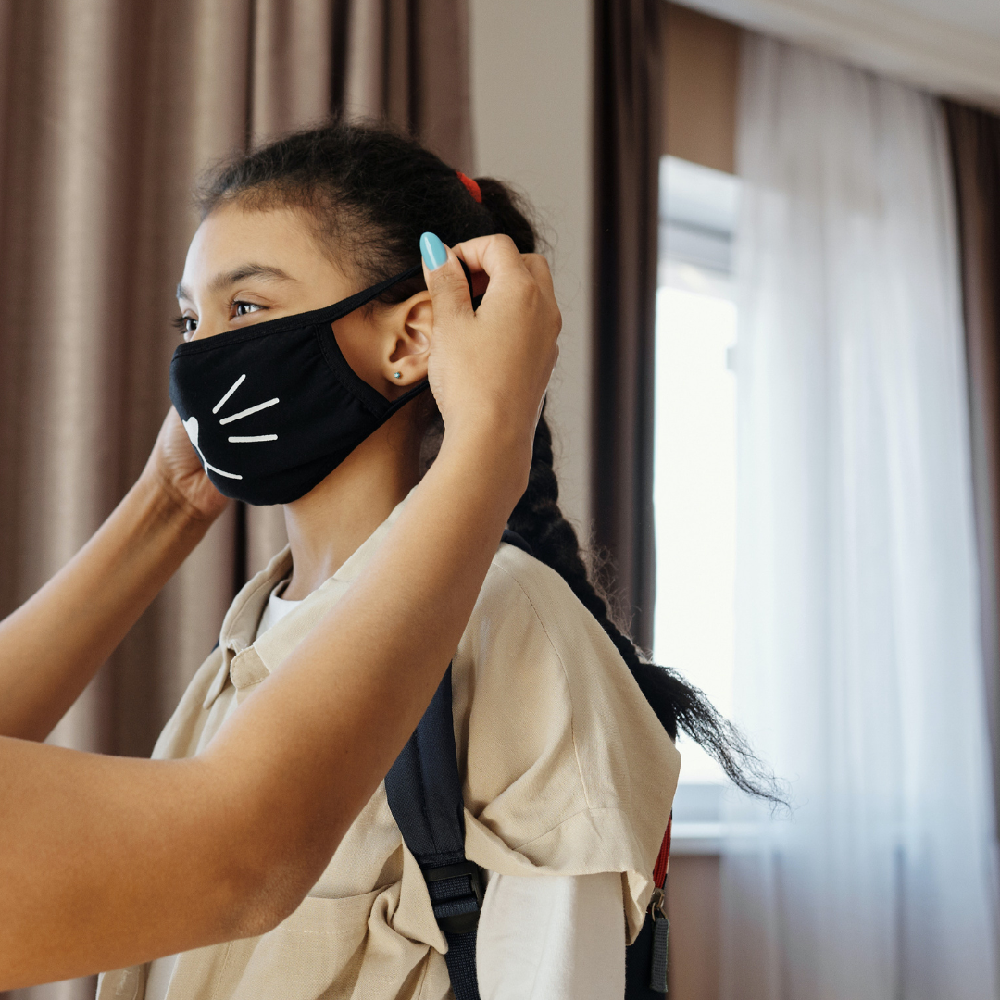
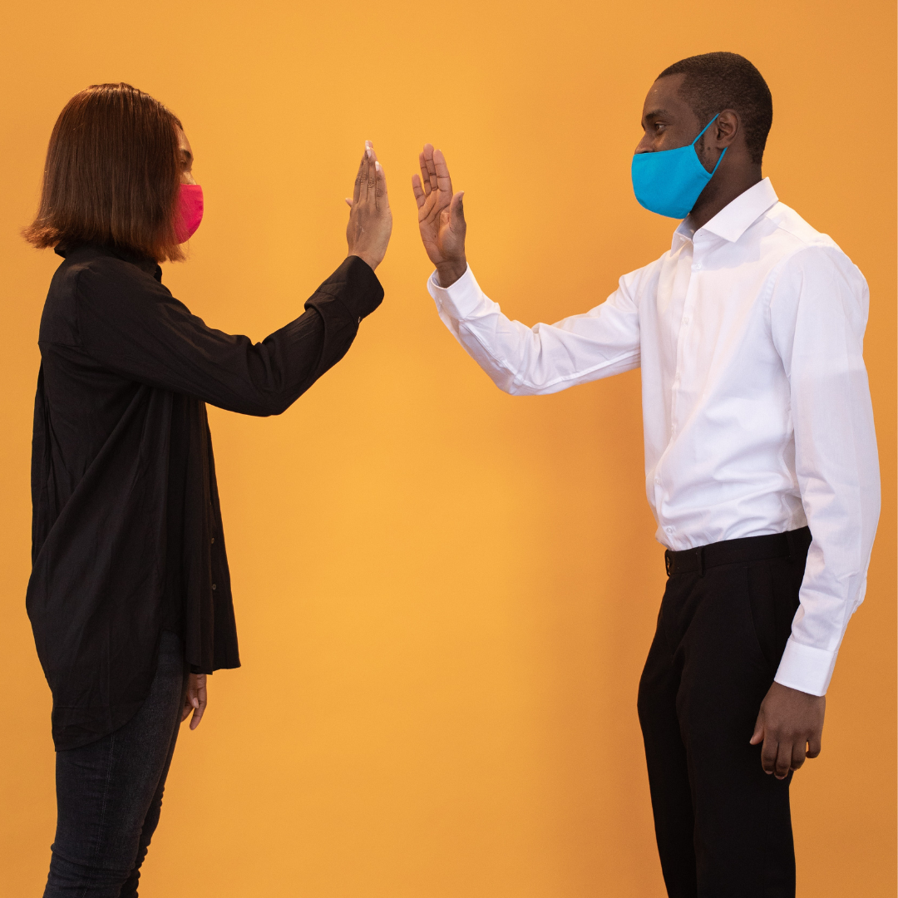
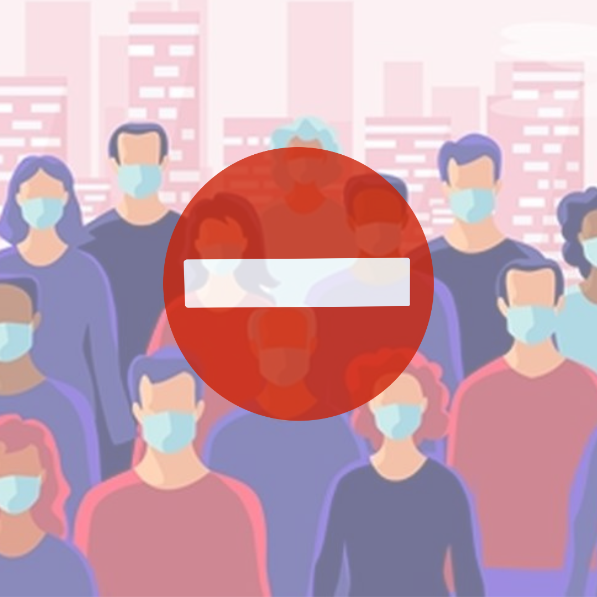
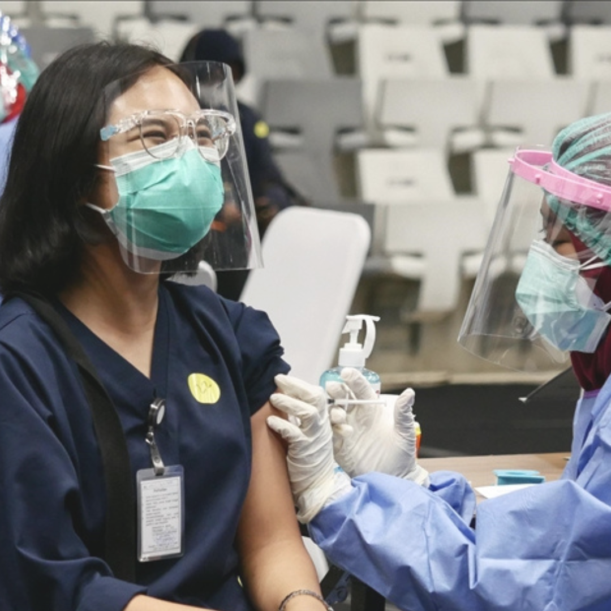

Mari mencegah COVID-19
Dengan Menerapkan beberapa protokol kesehatan

Selalu menggunakan masker ketika ingin berpergian
Masker berfungsi sebagai mencegah penularan COVID-19Mencuci tangan setelah melakukan aktivitas
Dengan mencuci tangan, kita dapat mencegah infeksi virus pada diri sendiri dan orang sekitar.

Menjaga Jarak
Dengan menjaga jarak berarti kita menjaga diri kita dan juga orang lain agat tidak terpapar COVID-19.

Menghindari Kerumunan
Dengan menghindari kerumunan dapat mencegah kita terinfeksi virus COVID-19

Melakukan Vaksinasi
Tubuh Seseorang yang telah melaksanakan vaksinasi, akan merangsang antibodi untuk belajar dan mengenali virus COVID-19, dengan demikian ketika tubuh kita terpapar COVID-19 tubuh kita dapat mengenali serta mempertahankan tubuh dari virus COVID-19..png)